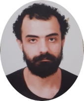

/gustavo.matos.35574406 - Ninguem mais usa o facebook
/gustavo.matos.35574406 - Ninguem mais usa o facebook /be__ssa - Desinstale o instagram
/be__ssa - Desinstale o instagram /EpicFail - Melhor canal do YouTube
/EpicFail - Melhor canal do YouTube /GustavoMatos0 - Códigos copiados e colados :)
/GustavoMatos0 - Códigos copiados e colados :) /gustavo-matos025 - Obrigatory Linkedin
/gustavo-matos025 - Obrigatory Linkedin
Meu nome é Gustavo Matos Corrêa, moro em Rio do Sul e comecei meus estudos no inicio de 2021 com cursos online de programação, desde lá me interessei muito pelas áreas que toda T.I abrange. Ainda em 2021 consegui ocupar uma vaga no Instituto Federal Catarinense - Rio do sul no curso de Ciência da Computação e me dedico a isso desde então. No momento estou a procura de estágios que agreguem ainda mais no meu conhecimento da área.
/gustavo.matos.35574406 - Ninguem mais usa o facebook /be__ssa - Desinstale o instagram /EpicFail - Melhor canal do YouTube /GustavoMatos0 - Códigos copiados e colados :) /gustavo-matos025 - Obrigatory Linkedin